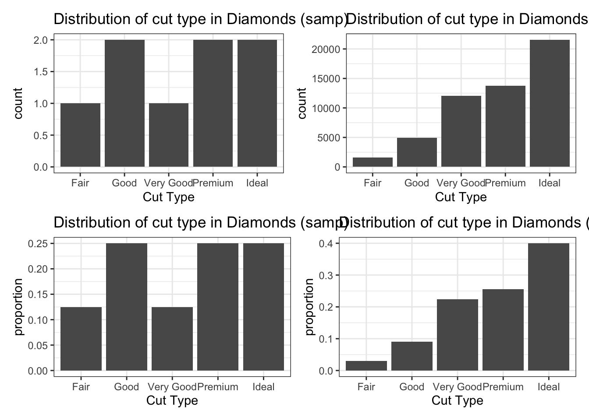

Topic 3: Descriptive Statistics for Numerical and Categorical Data
About
This activity builds off of what we learned in the Topic 1 and Topic 2 activities. We’ll learn how to use R to analyse numeric and categorical data. We discuss and implement measures of central tendancy and spread (including inquiry into robustness in the presence of outliers) for numerical data, and measures of frequency for cateogical data.
Descriptive Statistics
Workbook Objectives: This workbook covers the following objectives.
- Compute and discuss appropriate summaries for both numerical and categorical data
- Regarding numerical variables, discuss the difference between mean and median as well as standard deviation and inter-quartile range. Identify when each measure is appropriate.
- Compute summary statistics both by hand and with the use of \(\tt{R}\)
Important Reminders: The following previously mastered material is necessary for success through this workbook
- A variable is numerical if a summary statistic such as the mean has a meaningful interpretation.
- A variable is categorical if it serves to sort observations into different groups (categories).
- The unique values which a variable takes are called the levels of that variable.
Summarizing Numerical (Quantitative) Data
Recall: Variables for which computation of measures like the mean (average) or standard deviation are meaningful are numerical variables.
Measuring Central Tendancy
Measures of Central Tendancy (Averages): The mean and median both attempt to measure the center of a dataset.
The mean of a set of observations is the traditional average. We typically denote the mean by \(\bar{x}\) (or \(\mu\) in the case of population-level data) and it is computed as follows: \[\bar{x} = \frac{\displaystyle{\sum_{i=1}^{n}{x_i}}}{n} = \frac{x_1+x_2+x_3+...+x_n}{n}\]
The median is the middle value for a set of observations. To compute the median, list the numbers in ascending order and find the number or number(s) in the middle of the list. In the case that there is a single middle number, that is the median. In the case where there are two middle numbers, we take the mean of those two.
Example: The following are three random samples of carat values from the diamonds dataset.
| Sample_One | Sample_Two | Sample_Three |
|---|---|---|
| 0.41 | 2.68 | 1.05 |
| 1.01 | 1.01 | 0.31 |
| 1.22 | 0.26 | 0.31 |
| 1.02 | 0.90 | 0.30 |
| 0.30 | 0.43 | 0.40 |
| 0.30 | 0.53 | 1.50 |
| 1.00 | 2.00 | 2.27 |
| 1.17 | 0.33 | 10.00 |
- Use the code block below to compute the mean of
Sample_One
Hint 1
#manually add up the carat values in Sample One,
#and then divide by the total number of diamonds
#in the sample.
______
Hint 2
#fill in the blanks
(___ + ___ + ___ + ___ + ___ + ___ + ___ + ___)/___
Hint 3 (Solution)
#fill in the blanks
(0.41 + 1.01 + 1.22 + 1.02 + 0.30 + 0.30 + 1.00 + 1.17)/8
(0.41 + 1.01 + 1.22 + 1.02 + 0.30 + 0.30 + 1.00 + 1.17)/8
(0.41 + 1.01 + 1.22 + 1.02 + 0.30 + 0.30 + 1.00 + 1.17)/8In R we can easily compute the means and medians for our samples or for the entire data set! You might remember from our most recent workbook that the $ operator can be used to access an entire column of a data frame. I’ve stored the samples in a data frame called samples. R includes a function mean() for computing the mean of a list of numbers and a function median() for computing the median. The following methods both compute the mean() of Sample_Two.
mean(samples$Sample_Two)[1] 1.0175samples |>
summarize(avg_carat_wt = mean(Sample_Two)) avg_carat_wt
1 1.0175While the second method involves more typing, it is much more readable. Getting used to using the pipe operator (|>) will allow us to chain data manipulation operations together, resulting in very readable analyses.
- Use the code block below so that it computes the mean of
Sample_Three. You may use whichever method you prefer here.
Hint 1
#Start with the code below (I copied it from our
#earlier code chunk) and update it to compute
#the mean of Sample_Three
samples |>
summarize(avg_carat_wt = mean(Sample_Two))
samples |>
summarize(avg_carat_wt = mean(Sample_Three))
samples |>
summarize(avg_carat_wt = mean(Sample_Three))- Use the
median()function and the code block below to compute the median of each of the samples and then answer the question that follows. (Note. There are several ways to obtain the medians, so this code chunk won’t evaluate you as correct/incorrect.)
Hint 1
#Start with the copied code again, and update it
#to compute the median instead of the mean.
samples |>
summarize(avg_carat_wt = mean(Sample_Two))
Hint 2
#Power move! The summarize() function can compute
#multiple summary statistics at once. Update the
#code below to compute all three medians at once.
samples |>
summarize(
avg_carat_wt_samp1 = mean(Sample_One),
avg_carat_wt_samp2 = mean(Sample_Two),
avg_carat_wt_samp3 = mean(Sample_Three))
Check Your Understanding: Measures of Center
What does your work above tell you about the mean and median as measures of central tendency?
- In our first workbook we saw that we can use sample data to make generalizations about populations for which the sample is representative. Answer the following questions with this in mind.
Check Your Understanding: Sampling and Validity I
“Assuming that the samples of diamonds were taken randomly, which of the following claims is justified”
Check Your Understanding: Sampling and Validity I
Which of the following would result in improved estimates for the true mean carat weight of diamonds in our population?
Aside: Defining my own data
For data which is not already known to R (ie. data which is not part of a data frame), we can still use R to quickly perform computations. Consider the distributions of doors knocked on by two political campaign workers last week (Monday - Friday): \(\begin{array}{lcl} \text{Worker A} & : & 23,~24,~25,~26,~27\\ \text{Worker B:} & : & 0,~15,~25,~35,~50\end{array}\). We do this below with the help of the c() function in R, which can be used to create lists of values.
The following code block finds the mean and median for Worker A – execute the code block to find the mean and median. Once you’ve done this for Worker A, add two lines to the bottom of the code block so that it also finds the mean and median for Worker B.
Hint 1
#Copy and paste the two existing lines and
#replace the data inside of c() to reflect
#Worker B in the last two lines.
mean(c(23, 24, 25, 26, 27))
median(c(23, 24, 25, 26, 27))
Hint 2
#Fill in the blanks with Worker B's data.
mean(c(23, 24, 25, 26, 27))
median(c(23, 24, 25, 26, 27))
mean(c(___, ___, ___, ___, ___))
median(c(___, ___, ___, ___, ___))
mean(c(23, 24, 25, 26, 27))
median(c(23, 24, 25, 26, 27))
mean(c(0, 15, 25, 35, 50))
median(c(0, 15, 25, 35, 50))
mean(c(23, 24, 25, 26, 27))
median(c(23, 24, 25, 26, 27))
mean(c(0, 15, 25, 35, 50))
median(c(0, 15, 25, 35, 50))- Use your explorations of the means and medians for the poll workers to answer the following question.
Check Your Understanding: Measures of Center
Which of the following are correct?
Measuring Spread
Measures of Variability: Clearly, the center of a dataset doesn’t tell the entire story. Our two political pollsters obviously have very different door-knocking strategies but both have a mean (and median) of \(25\) doors per day. We should also measure the spread of data.
The standard deviation of a set of observations is denoted by \(s\) (or \(\sigma\) in the case of population-level data) and is computed as follows: \[s = \sqrt{\frac{\displaystyle{\sum_{i=1}^{n}{\left(x_i-\bar{x}\right)^2}}}{n-1}}\]
We should also note that if you are certain that you are working with population-level data, then the denominator used to compute the standard deviation should be changed to \(N\) (the population size). We can do this because there is no uncertainty in estimating the population standard deviation if we have records from every element of the population.
Explaining the Standard Deviation Formula: The standard deviation seeks to measure an “average deviation” from the mean.
- If we don’t look too closely at the formula, we can see the summation symbol \(\left(\sum\right)\) as well as division (by just about the number of values we’ve added up). That’s almost like an average!
- What are we averaging? The quantity \(\left(x - \bar{x}\right)\) denotes an observed value’s deviation from the mean. We shouldn’t average these values though, since the mean sits in center of the data and we would have deviations above the mean (positive) “cancelling out” deviations below the mean (negative).
- We square the deviations which has two effects: (1) all of the squared deviations are now non-negative, so that no cancellation can occur, and (2) large deviations from the mean carry a larger weight in measuring the standard deviation.
- Since we squared the deviations before computing the “average”, the units of measure are no longer comparable to the original units that the variable was measured in – the units are square units now. This is why we see the large square root as the last piece of the formula – taking the square root brings us back to the original units.
The inter-quartile range (IQR) of a set of observations measures the spread of the “middle-50-percent” of the observations. The IQR is the distance between \(Q1\) (the 25th percentile) and \(Q3\) (the 75th percentile).
- Note that the median of a set of observations splits the set into two halves: an upper half and a lower half. The median of the lower half is called the first quartile (\(Q_1\)) while the median of the upper half is called the third quartile (\(Q_3\)). The interquartile range is the distance between \(Q_1\) and \(Q_3\). That is, \[IQR = Q_3-Q_1\]
- Check your intuition about the standard deviation and interquartile range by answering the questions below.
Check Your Understanding: Measures of Spread I
Without carrying out the computations, which of the samples of diamonds has the largest standard deviation?
Check Your Understanding: Measures of Spread II
Which measure of spread is more greatly impacted by the presence of outliers?
The two plots below are a histogram (left) and a boxplot (right), each showing the distribution of carat-weights for the diamonds in our population.

- The histogram does a nice job showing the true shape of the data, but does not always do a good job showing the presence of outliers. The purple line has been added to the histogram to show the true mean carat weight.
- The boxplot doesn’t show the detailed shape that the histogram does, but it does a great job showing the IQR, median, and any outliers present.
- The lone dots in the boxplot show any outliers (extending more than 1.5 times the IQR, the distance from \(Q1\) to \(Q3\)).
- The box in the boxplot shows the IQR – the left edge of the box is at \(Q1\) and the right edge of the box is at \(Q3\).
- The line through the middle of the box denotes the location of the median.
- I’ve added a faded purple line to our boxplot, showing the location of the mean carat weight. We can really see the impact of those outliers on the mean here.
A Note on Skew: It is common to refer to data as skewed if the presence of outliers cause the mean and median to disagree with one another on the location of the “center” of our data. In this case, we say that the data is skewed in the direction that those outliers have pulled the mean. For example, we would say that the carat weight data (from above) is skewed right.
In R we can easily compute the standard deviation with the function sd(), and IQR with the function quantiles() or IQR(), for our samples or for the entire dataset! Recall that our diamond samples are stored in a data frame called samples. The code block below is preset to compute the standard deviation and both the first and third quantiles for each cample. Note that in the quantiles() function the 0.25 identifies the 25th percentile (\(Q1\)) and the 0.75 identifies the 75th percentile (\(Q3\)). Add the necessary code to find the interquartile range for each of the samples.
Remark: Our third sample of diamond carat sizes contained an outlier. The presence of this outlier drastically impacted the computed mean and standard deviation, but didn’t have much (if any) effect on the median or \(IQR\). Because of this, we say that the median and \(IQR\) are robust statistics in the presence of outliers.
In R we can also easily explore these measures of spread for our campaign workers from earlier. Recall their door-knocking data: \(\begin{array}{lcl} \text{Worker A} & : & 23,~24,~25,~26,~27\\ \text{Worker B:} & : & 0,~15,~25,~35,~50\end{array}\)
Use the code blocks below to find the standard deviation and IQR for the doors visited by the campaign workers.
Hint 1
#Use the c() function when defining your
#door-knocking data.
Hint 2
#Remembering how to store values in
#variables will save some typing.
Hint 3
#Fill in the blanks
worker_a <- c(___)
worker_b <- c(___)
Hint 4
worker_a <- c(23, 24, 25, 26, 27)
worker_b <- c(0, 15, 25, 35, 50)
#Now use R functionality to compute
#the summary statistics
Hint 5
worker_a <- c(23, 24, 25, 26, 27)
worker_b <- c(0, 15, 25, 35, 50)
#Fill in the blanks
sd(___)
IQR(___)
sd(___)
IQR(___)
Hint 6 (Solved)
Summarizing Categorical (Qualitative, Factor) Data
Categorical data is best summarized using a frequency table. That is, we use a table that lists how frequent each observation occured in the dataset. For example, consider the samples of diamond cuts below:
| Sample_One | Sample_Two | Sample_Three |
|---|---|---|
| Good | Ideal | Fair |
| Very Good | Good | Good |
| Ideal | Premium | Premium |
| Premium | Very Good | Premium |
| Premium | Premium | Ideal |
| Ideal | Premium | Good |
| Premium | Ideal | Very Good |
| Ideal | Premium | Ideal |
We can pipe our data frame into the count() function with the column we’d like to obtain counts for in order to construct a frequency table. To obtain a relative frequency table, we can use the mutate() function to create a new column in our resulting data frame – below, we’ve named the column relative_frequency and have computed its values by taking the computed counts (n) and dividing by the total count (sum(n)). The following code chunk is preset to compute a frequency and relative frequency table for Sample_One. Adapt the code to provide summaries for Sample_Two and Sample_Three.
Note that we could have achieved the same objectives using the following code as well.
table(cutSamples$Sample_One)
Fair Good Very Good Premium Ideal
0 1 1 3 3 table(cutSamples$Sample_One)/nrow(cutSamples)
Fair Good Very Good Premium Ideal
0.000 0.125 0.125 0.375 0.375 This code requires a bit less typing, but it is less flexible and also less readable.
Below, we can see the distributions of diamond cut from Sample_Two (left) and from our entire population (right) below. Even with a sample of 8 diamonds, we gain “some” insight as to the most and least common diamond cuts. You may also notice that the frequency and relative frequency plots look identical aside from the scale on the vertical axis – this will be the case in general.

We’ll see how to create plots like these in the next notebook.
Submit
Warning
Grading function is not currently available for these web-based notebooks. If you would like to utilize grading functionality, then please use either the Posit Cloud pre-built instance or install the {learnr} notebooks locally.
Summary
Summary: Here’s a quick summary of the most important ideas from this workbook.
- We can summarize numerical data using measures of central tendency and measures of spread (or variability)
- The mean (\(\bar{x}\) for samples, \(\mu\) for populations) and median measure the center of a set of numerical data.
- The standard deviation (\(s\) for samples, \(\sigma\) for populations) and interquartile range (\(IQR\)) measure the spread of a set of numerical data.
- The median and \(IQR\) are robust measures in the presence of outliers (unusually large or small values).
- Categorical data is best summarized in a frequency table or relative frequency table.
R Commands Introduced: The following commands in R were introduced here.
- Compute the mean:
data_frame_name |>
summarize(avg_column_name = mean(column_name))
#or
mean(data_frame_name$column_name)- Compute the median:
data_frame_name |>
summarize(median_column_name = median(column_name))
#or
median(data_frame_name$column_name)- Compute the standard deviation:
data_frame_name |>
summarize(sd_column_name = sd(column_name))
#or
sd(data_frame_name$column_name)- Compute the boundaries for the interquartile range:
data_frame_name |>
summarize(quantile_column_name = quantile(column_name, probs = c(0.25, 0.75)))
#or
quantile(data_frame_name, probs = c(0.25, 0.75))- Compute the interquartile range:
data_frame_name |>
summarize(IQR_column_name = IQR(column_name))
#or
IQR(data_frame_name$column_name)- Compute general percentiles:
data_frame_name |>
summarize(percentile_column_name = quantile(column_name, probs = c(p1, p2, ...)))
#or
quantile(data_frame_name$column_name, probs = c(p1, p2, ...))- Build a frequency table:
data_frame_name |>
count(column_name)
#or
table(data_frame_name$column_name)- Build a relative frequency table:
data_frame_name |>
count(column_name) |>
mutate(relative_frequency = n / sum(n))
#or
table(data_frame_name$column_name) / nrow(data_frame_name)